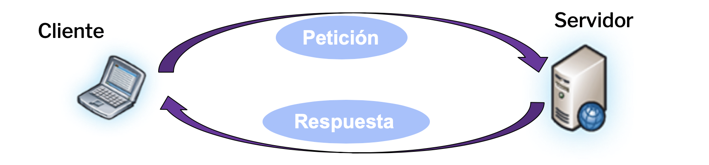

Temas:
- Manipulación de archivos
- Generalidades
- Abrir archivos
- Cerrar archivos
- Leer archivos
- Escribir archivos
- Copiar archivos
- Borrar archivos
- Envío de datos
Generalidades - E/S con Archivos
El manejo de archivos (de texto o binarios) es una parte importante de una aplicación web.
PHP nos provee de una extensa gama de funciones de acceso a archivos.
En esta clase veremos las funciones básica:
- fopen (abrir)
- fclose (cerrar)
- fread / fgets (leer)
- fwrite / fputs (escribir)
- copy (copia)
- unlink (elimina)
Temas:
- Manipulación de archivos
- Generalidades
- Abrir archivos
- Cerrar archivos
- Leer archivos
- Escribir archivos
- Copiar archivos
- Borrar archivos
- Envío de datos
Abrir archivos - fopen()
Nos permite abrir un archivo ya sea de manera local o externa (http:// o ftp://).
El primer parámetro de fopen contiene el nombre del archivo a ser abierto, y el segundo especifica el modo en que el archivo será abierto.
El valor de retorno de fopen es un entero. Nos servirá para referenciar al archivo abierto.
// int fopen(archivo, modo);
$archivo = fopen("archivo.txt", "r");
Abrir archivos - fopen()
Modo |
Descripción |
|---|---|
r |
Abre un archivo para sólo lectura. El cursor comienza al principio del archivo. |
r+ |
Apertura para lectura y escritura; coloca el puntero al fichero al principio del fichero. |
w |
Apertura para sólo escritura; coloca el puntero al fichero al principio del fichero y trunca el fichero a longitud cero. Si el fichero no existe se intenta crear. |
w+ |
Apertura para lectura y escritura; coloca el puntero al fichero al principio del fichero y trunca el fichero a longitud cero. Si el fichero no existe se intenta crear. |
a |
Apertura para sólo escritura; coloca el puntero del fichero al final del mismo. Si el fichero no existe, se intenta crear. |
a+ |
Apertura para lectura y escritura; coloca el puntero del fichero al final del mismo. Si el fichero no existe, se intenta crear. |
x |
Crea un nuevo archivo para sólo lectura. Retorna FALSE y un error si el archivo existe. |
x+ |
Creación y apertura para lectura y escritura; de otro modo tiene
el mismo comportamiento que x.
|
Temas:
- Manipulación de archivos
- Generalidades
- Abrir archivos
- Cerrar archivos
- Leer archivos
- Escribir archivos
- Copiar archivos
- Borrar archivos
- Envío de datos
Cerrar archivos - fclose()
Nos permite cerrar un archivo abierto.
fclose requiere el indicador del archivo a ser cerrado (la variable que referencia al archivo).
Retorna TRUE si tuvo éxito, FALSE caso contrario.
$archivo = fopen("archivo.txt", "r");
// Trabajamos con el archivo
fclose($archivo);
Temas:
- Manipulación de archivos
- Generalidades
- Abrir archivos
- Cerrar archivos
- Leer archivos
- Escribir archivos
- Copiar archivos
- Borrar archivos
- Envío de datos
Leer archivos - fread()
Nos permite leer de un archivo abierto.
El primer parámetro de fread contiene el indicador del archivo a ser leído, y el segundo especifica el número máximo de bytes que serán leídos.
Retorna un string que representa al contenido del archivo leído.
$archivo = fopen("archivo.txt","r");
echo fread($archivo, filesize("archivo.txt"));
// Lee el archivo completo
Leer archivos - fgets()
Nos permite leer una línea de una archivo abierto.
Requiere como parámetro el indicador del archivo a ser leído, y retorna un string que representa la línea que fue leída.
Después de cada llamada a fgets, el cursor se mueve a la siguiente línea.
$archivo = fopen("archivo.txt","r");
echo fgets($archivo);
Leer archivos - feof() (End Of File)
Retorna un booleano que indica si se ha llegado al fin del archivo.
Requiere cómo parámetro el indicador.
$archivo = fopen("archivo.txt","r");
// Lee línea a línea hasta EOF
while(!feof($archivo))
{
echo fgets($archivo), "
";
}
fclose($archivo);
Temas:
- Manipulación de archivos
- Generalidades
- Abrir archivos
- Cerrar archivos
- Leer archivos
- Escribir archivos
- Copiar archivos
- Borrar archivos
- Envío de datos
Escribir archivos - fwrite() - fputs()
Nos permite escribir en un archivo abierto.
La función parará cuando llegue al fin del archivo o cuando alcance la longitud especificada
El primer parámetro contiene el archivo a ser leído, y el segundo es el string a ser escrito. El tercer parámetro es opcional e indica la cantidad de bytes a ser escritos.
Retorna la cantidad de bytes que se escribieron o FALSE si hubo error.
Escribir archivos - fwrite() - fputs()
// Usando fwrite()
$archivo = fopen("archivo.txt","w");
echo fwrite($archivo,"Prueba de guardado");
fclose($archivo);
// Usando fputs()
$archivo = fopen("archivo.txt","w");
echo fputs($archivo,"Prueba de guardado");
fclose($archivo);
Temas:
- Manipulación de archivos
- Generalidades
- Abrir archivos
- Cerrar archivos
- Leer archivos
- Escribir archivos
- Copiar archivos
- Borrar archivos
- Envío de datos
Copiar archivos - copy()
Permite copiar un archivo.
Los parámetros que recibe son los nombres de los archivos. El primero es el archivo origen, luego el destino de la copia.
Retorna TRUE en caso de éxito o FALSE si hubo algún error.
echo copy("archivoACopiar.txt","archivoCopiado.txt");
Temas:
- Manipulación de archivos
- Generalidades
- Abrir archivos
- Cerrar archivos
- Leer archivos
- Escribir archivos
- Copiar archivos
- Borrar archivos
- Envío de datos
Borrar archivos - unlink()
Permite eliminar un archivo.
Recibe el nombre del archivo a ser borrado como primer parámetro.
Retorna TRUE en caso de éxito o FALSE si hubo algún error.
echo unlink("archivo.txt");
Temas:
- Manipulación de archivos
- Envío de datos
- HTTP
- GET
- POST
HTTP (Hypertext Transfer Protocol)
HTTP está diseñado para permitir comunicaciones entre clientes y servidores.
HTTP funciona como un protocolo de pedido-respuesta entre cliente y servidor.
Un navegador web puede ser el cliente y una aplicación sobre un computador que aloja un sito web puede ser el servidor.
Temas:
- Manipulación de archivos
- Envío de datos
- HTTP
- GET
- POST
HTTP - Método GET
El par de nombres/valores es enviado en la dirección URL (texto claro).
Las peticiones GET se pueden almacenar en caché.
Permanecen en el historial del navegador.
Pueden ser marcadas (book marked).
Nunca debe ser utilizado cuando se trata de datos confidenciales.
Tiene limitaciones de longitud de datos (longitud máxima de 2048 caracteres en la URL).
Temas:
- Manipulación de archivos
- Envío de datos
- HTTP
- GET
- POST
HTTP - Método POST
El par de nombres/valores es enviado en el cuerpo del mensaje HTTP.
Las peticiones POST no se almacenan en caché.
No permanecen en el historial del navegador.
No pueden ser marcadas.
No poseen restricciones de longitud de datos.
HTTP - Manejo de Formularios
Tanto GET como POST crean un array asociativo.
Dicho array contiene pares de clave-valor, dónde las claves son los nombres (atributo name) de los controles del formulario y los valores son la entrada de datos del usuario.
PHP utiliza las super globales $_GET, $_POST y $_REQUEST para recolectar datos provenientes de un Form.
$_GET es un array pasado por GET.
$_POST es un array pasado por POST.
$_REQUEST es un array asociativo que contiene $_GET, $_POST y $_COOKIE.